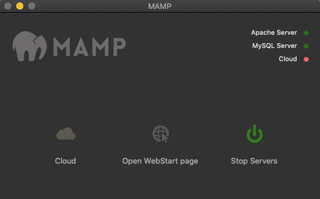

Pour télécharger la plus récente version de WordPress, rendez-vous sur la page de téléchargement de WordPress.org
- Décompressez le .zip 🗜️ dans le dossier associé à votre outil Apache, MySQL et PHP (AMP).
Par exemple, si vous utilisez MAMP, créez un dossier📁 à l'intérieur du dossier htdocs📁 et donnez-lui le nom de votre projet.
- Ouvrez votre logiciel AMP et démarrez les serveurs. Assurez-vous que l'Apache Server et le MySQL server soient bien activés. Un indicateur visuel devrait vous indiquer leur statut.
Par exemple, MAMP affiche un point vert 🟢 à leur droite confirmant leur fonctionnement.
L'interface MAMP est sujette à changements.
- Cliquez sur le bouton Open WebStart page situé au milieu du logiciel MAMP, vous serez redirigé vers la page d'accueil de MAMP où un lien vous permettra d'accéder à phpMyAdmin (sous le menu Tools).
- À partir du menu à gauche de phpMyAdmin, sélectionner l'option New afin de créer une nouvelle base de données.
- Donnez ensuite le nom de votre projet à la base de données et appuyez sur le bouton
Create.
Félicitation! Vous avez maintenant une base de données vide prête à être populée par WordPress.
-
Retournez sur la page d'accueil de MAMP, via l'option Open WebStart page et sélectionner l'onglet My website. Une liste correspondant aux projets dans le dossier htdocs 📁 devraient s'afficher.
Sélectionner votre projet.
Si le message suivant s'affiche:
If you can see this page, your new virtual host was set up successfully. Now, web content can be added and this placeholder page1 should be replaced or deleted.
Effacez le fichier index.html à la racine du dossier htdocs 📁.
Un message de bienvenue de la part de WordPress devrait s'afficher.
Appuyez sur le bouton C'est parti !
-
Remplissez les informations de connexion à votre base de données.
Nom la base de donnéescorrespond à celui que vous avez donné lorsque vous avez créé votre base de données dans phpMyAdmin.Identifiant, à moins que vous l'ayez changé, l'identifiant local par défaut est root.Mot de passe, à moins que vous l'ayez changé, le mot de passe local par défaut est root.Adresse de la base de donnéeslaissez localhost.Préfixe de tableslaissez wp_.
Et appuyer sur Envoyer
Entrez ensuite les informations désirées pour votre site.
- Nom du site
- Nom d'usager
- Mot de passe
- Prendre le temps de cocher: "Demander aux moteurs de recherche de ne pas indexer ce site" car c'est un travail d'école.
- etc.